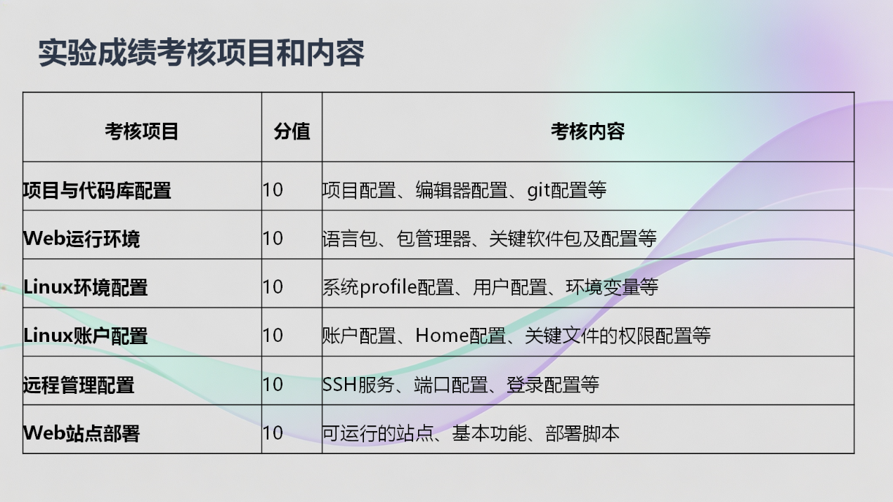

本地开发 · Git 管理 · Linux 配置 · 远程部署
一个可以验收的技术博客项目
用一个静态站点把课程中的工具串成完整链路：从写 Markdown、管理代码，到配置 Linux、使用 SSH，再把网页部署到服务器。

Workflow
项目实施路径
Evidence
验收证据清单
每一项配置都保留命令结果、截图和 Git 提交记录。答辩时按评分项展示，报告里按实验过程展开。
Posts
实验记录文章
Deploy
部署目标
优先完成 Linux 虚拟机 + Nginx 局域网部署；如果时间充足，再补 GitHub Pages 作为公网展示。